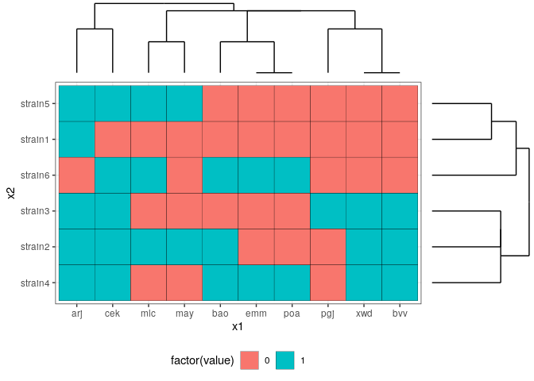

Package for alignment of dendrogram plots with heatmap in ggplot2.
Background
dendrolenda is a freely available software that allows users to visualize their data in the form of heat maps. It has an easy-to-use interface and makes alignments of dendrograms plots with heatmaps work like a charm.
Installation
dendrolenda is available on github. One can install the latest development version of the code using the following code:
if("remotes" %in% rownames(installed.packages()) == FALSE) { install.packages("remotes") } remotes::install_github("https://github.com/michbur/dendrolenda")
Usage
library(ggplot2) library(dendrolenda) data(example_data) dendro_top <- plot_dendrogram(d1) dendro_right <- plot_dendrogram(d2) + coord_flip() # Plot aligned dendrograms with legend at the bottom arrange_dendrogram(hm + theme_bw() + theme(legend.position = "bottom"), dendro_top + theme_void(), dendro_right + theme_void())
